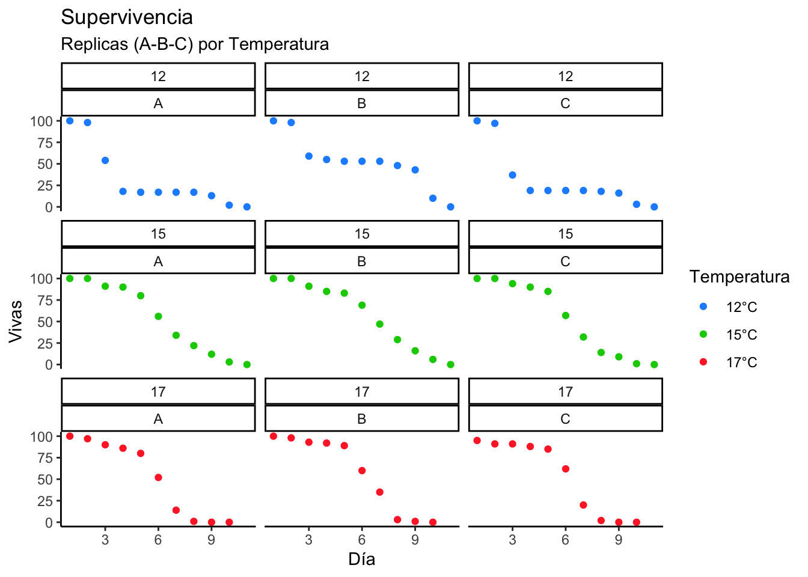
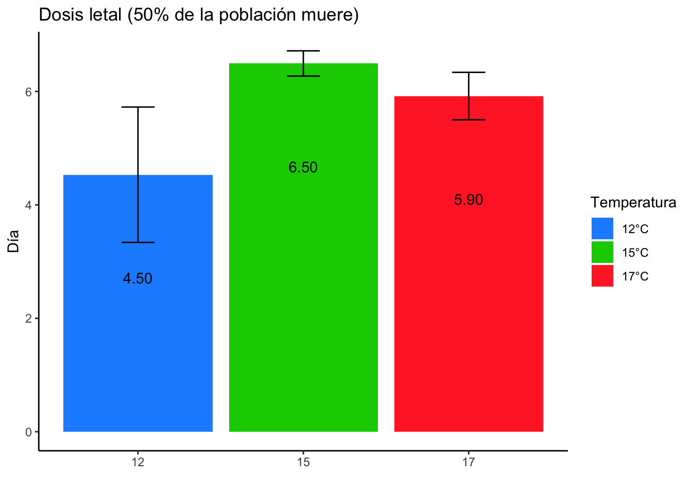
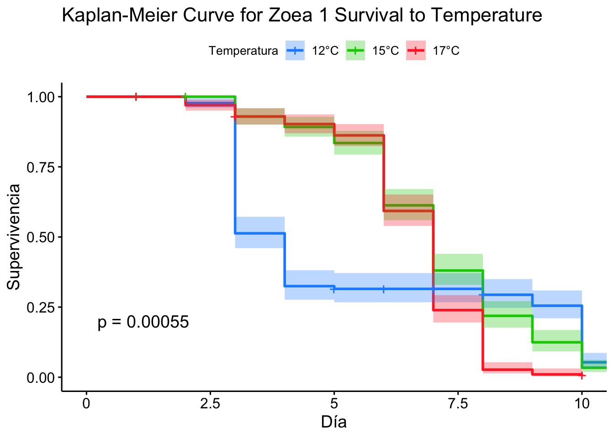

library(cowplot)
library(scales)
library(dplyr)
library(gridExtra)
library(tidyverse)
library(ggsci)
library(ggplot2)
library(Rmisc)
library(survminer)
library(survival)
library(MASS)#Importo base de datos.
Mort<-read.delim("/Users/lucasb/Dropbox/Mac/Desktop/TESIS/TESIS B/RESULTADOS/mort.txt")
Mort$bino<-Mort$Vivas/100
#Defino temperatura como un factor
Mort$Temperatura<-as.factor(Mort$Temperatura)
#Grafico de la supervivencia en las tres temperaturas por cada frasco
Grafico_frascos<-ggplot(Mort, aes(x=Dia, y=Vivas, colour=Temperatura)) + geom_point() + theme_classic() + ggtitle("Supervivencia")+facet_wrap(~Temperatura*Frasco) + labs(x="Día", subtitle = "Replicas (A-B-C) por Temperatura")
Grafico_frascos + scale_colour_manual(values =c("dodgerblue1", "green3", "firebrick1"), labels=c("12°C","15°C","17°C"))
#Estadisticos basicos (SD, SE, CI, MEAN)
LT50_summary<- summarySE(Mort, measurevar="bino", groupvars=c("Temperatura","Dia"))
print(LT50_summary)## Temperatura Dia N bino sd se ci
## 1 12 1 3 1.000000000 0.000000000 0.000000000 0.00000000
## 2 12 2 3 0.976666667 0.005773503 0.003333333 0.01434218
## 3 12 3 3 0.500000000 0.115325626 0.066583281 0.28648474
## 4 12 4 3 0.306666667 0.210792157 0.121700908 0.52363675
## 5 12 5 3 0.296666667 0.202319879 0.116809436 0.50259044
## 6 12 6 3 0.296666667 0.202319879 0.116809436 0.50259044
## 7 12 7 3 0.296666667 0.202319879 0.116809436 0.50259044
## 8 12 8 3 0.276666667 0.176162803 0.101707642 0.43761266
## 9 12 9 3 0.240000000 0.165227116 0.095393920 0.41044691
## 10 12 10 3 0.050000000 0.043588989 0.025166115 0.10828105
## 11 12 11 3 0.000000000 0.000000000 0.000000000 0.00000000
## 12 15 1 3 1.000000000 0.000000000 0.000000000 0.00000000
## 13 15 2 3 1.000000000 0.000000000 0.000000000 0.00000000
## 14 15 3 3 0.920000000 0.017320508 0.010000000 0.04302653
## 15 15 4 3 0.883333333 0.028867513 0.016666667 0.07171088
## 16 15 5 3 0.826666667 0.025166115 0.014529663 0.06251609
## 17 15 6 3 0.606666667 0.072341781 0.041766547 0.17970695
## 18 15 7 3 0.376666667 0.081445278 0.047022453 0.20232129
## 19 15 8 3 0.216666667 0.075055535 0.043333333 0.18644828
## 20 15 9 3 0.123333333 0.035118846 0.020275875 0.08724005
## 21 15 10 3 0.033333333 0.025166115 0.014529663 0.06251609
## 22 15 11 3 0.000000000 0.000000000 0.000000000 0.00000000
## 23 17 1 3 0.983333333 0.028867513 0.016666667 0.07171088
## 24 17 2 3 0.953333333 0.037859389 0.021858128 0.09404794
## 25 17 3 3 0.913333333 0.015275252 0.008819171 0.03794583
## 26 17 4 3 0.886666667 0.030550505 0.017638342 0.07589166
## 27 17 5 3 0.846666667 0.045092498 0.026034166 0.11201597
## 28 17 6 3 0.580000000 0.052915026 0.030550505 0.13144821
## 29 17 7 3 0.230000000 0.108166538 0.062449980 0.26870058
## 30 17 8 3 0.020000000 0.010000000 0.005773503 0.02484138
## 31 17 9 3 0.003333333 0.005773503 0.003333333 0.01434218
## 32 17 10 3 0.000000000 0.000000000 0.000000000 0.00000000#Separación de tabla por temperatura
mort_12<-LT50_summary[1:11, ]
mort_15<-LT50_summary[12:22, ]
mort_17<-LT50_summary[23:32,]
#Modelo lineales generalizados por temperatura, que permitieron obtener tasas de mortalidad
model1<-glm(data=mort_12, bino ~ Dia, family=quasibinomial())
summary(model1)##
## Call:
## glm(formula = bino ~ Dia, family = quasibinomial(), data = mort_12)
##
## Deviance Residuals:
## Min 1Q Median 3Q Max
## -0.5179 -0.2999 -0.0738 0.3400 0.5964
##
## Coefficients:
## Estimate Std. Error t value Pr(>|t|)
## (Intercept) 2.1710 0.6380 3.403 0.00784 **
## Dia -0.4791 0.1117 -4.289 0.00202 **
## ---
## Signif. codes: 0 '***' 0.001 '**' 0.01 '*' 0.05 '.' 0.1 ' ' 1
##
## (Dispersion parameter for quasibinomial family taken to be 0.1436587)
##
## Null deviance: 5.4993 on 10 degrees of freedom
## Residual deviance: 1.5399 on 9 degrees of freedom
## AIC: NA
##
## Number of Fisher Scoring iterations: 5model2<-glm(data=mort_15, bino ~ Dia, family=quasibinomial())
summary(model2)##
## Call:
## glm(formula = bino ~ Dia, family = quasibinomial(), data = mort_15)
##
## Deviance Residuals:
## Min 1Q Median 3Q Max
## -0.185582 -0.053923 -0.005199 0.088830 0.186640
##
## Coefficients:
## Estimate Std. Error t value Pr(>|t|)
## (Intercept) 5.84038 0.37027 15.77 7.28e-08 ***
## Dia -0.89940 0.05508 -16.33 5.39e-08 ***
## ---
## Signif. codes: 0 '***' 0.001 '**' 0.01 '*' 0.05 '.' 0.1 ' ' 1
##
## (Dispersion parameter for quasibinomial family taken to be 0.01151942)
##
## Null deviance: 8.21286 on 10 degrees of freedom
## Residual deviance: 0.13672 on 9 degrees of freedom
## AIC: NA
##
## Number of Fisher Scoring iterations: 6model3<-glm(data=mort_17, bino ~ Dia, family=quasibinomial())
summary(model3)##
## Call:
## glm(formula = bino ~ Dia, family = quasibinomial(), data = mort_17)
##
## Deviance Residuals:
## Min 1Q Median 3Q Max
## -0.287545 -0.221565 -0.146333 -0.006668 0.263467
##
## Coefficients:
## Estimate Std. Error t value Pr(>|t|)
## (Intercept) 6.6331 0.9512 6.974 0.000116 ***
## Dia -1.1205 0.1559 -7.186 9.37e-05 ***
## ---
## Signif. codes: 0 '***' 0.001 '**' 0.01 '*' 0.05 '.' 0.1 ' ' 1
##
## (Dispersion parameter for quasibinomial family taken to be 0.05103717)
##
## Null deviance: 8.41356 on 9 degrees of freedom
## Residual deviance: 0.38809 on 8 degrees of freedom
## AIC: NA
##
## Number of Fisher Scoring iterations: 6#dose.p utiliza los modelos lineales para encontrar la dosis (día) sobre el cual el p=0.5 (50% de la población) ya ha muerto.
print(dose.p(model1, p = 0.5))## Dose SE
## p = 0.5: 4.531844 0.6121778print(dose.p(model2, p = 0.5))## Dose SE
## p = 0.5: 6.493628 0.11405print(dose.p(model3, p = 0.5))## Dose SE
## p = 0.5: 5.919705 0.2142654#CREACIÓN DE GRAFICO FINAL (DIFERENCIAS ENTRE LT50), estos datos se extraen de los resultados de dose.p
lt50<-c(4.531844, 6.493628, 5.919705)
CI<-c(0.6121778*1.95, 0.11405*1.95, 0.2142654*1.95)
temp<-c(12, 15,17)
data_final<-data.frame(lt50, CI, temp)
data_final$temp<-as.factor(data_final$temp)
lt50_plot<-ggplot(data_final, aes(x=temp, y=lt50, fill=temp))+ geom_bar(stat="identity") + theme_classic() + labs(title = "Dosis letal (50% de la población muere)", x="", y="Día", fill= "Temperatura") + scale_fill_manual(values =c("dodgerblue1", "green3", "firebrick1"), labels=c("12°C","15°C","17°C"))
lt50_plot + geom_errorbar(aes(ymin=lt50-CI, ymax=lt50+CI), width=.2, position=position_dodge(0.05)) + geom_text(aes(label=c("4.50","6.50","5.90")),position = position_dodge(0.9), vjust = 10) 
##reorden de la tabla correcto para el analisis
repV<- Mort$Muertas
repV[repV=="0"]<-1
KAP<-Mort %>%
mutate(count = repV) %>%
uncount(count)
KAP$STATUS <- ifelse (KAP$Muertas==0, 1, 2)
survObj <- Surv(time=KAP$Dia, event=KAP$STATUS==2)
#Analisis de Kaplan-Meier
sfit <- survfit(Surv(Dia, STATUS)~Temperatura, data=KAP)
#Grafico de Kaplan-Meier
ggsurvplot(sfit, conf.int=TRUE, pval=TRUE, risk.table=FALSE,
legend.labs=c("12°C", "15°C","17°C"), legend.title="Temperatura",
palette=(c("dodgerblue1", "green3", "firebrick1")),
title="Kaplan-Meier Curve for Zoea 1 Survival to Temperature",
risk.table.height=.15, ylab="Supervivencia", xlab="Día")